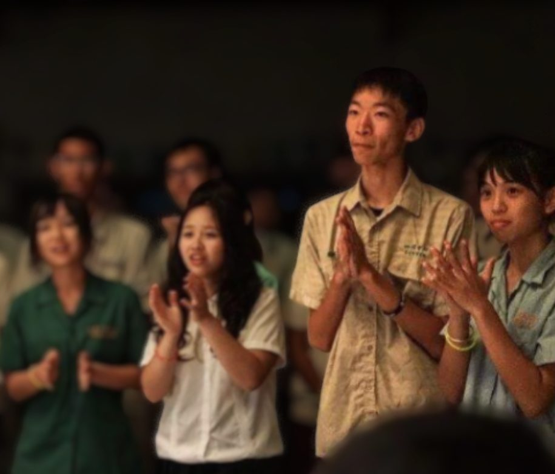
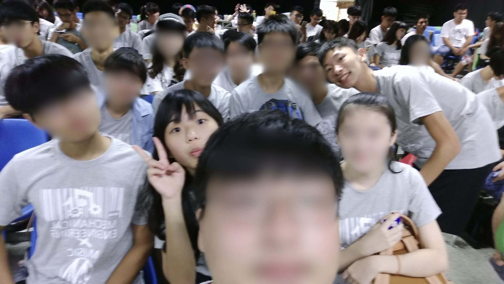
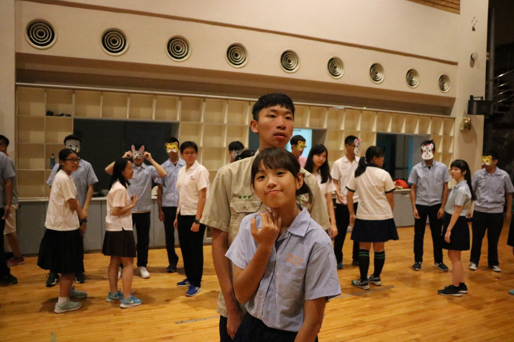
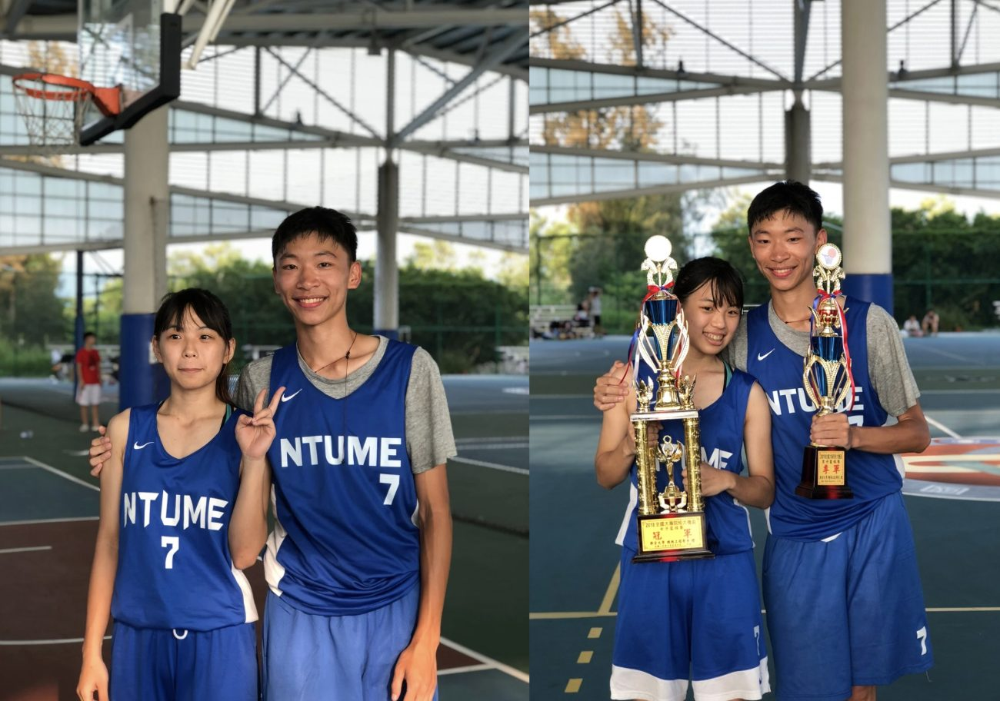
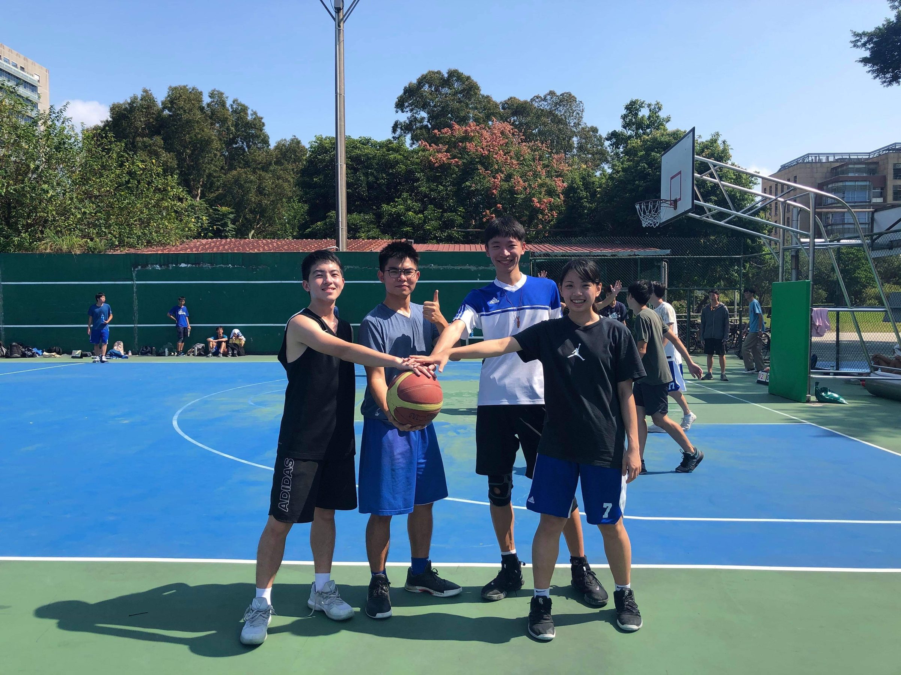
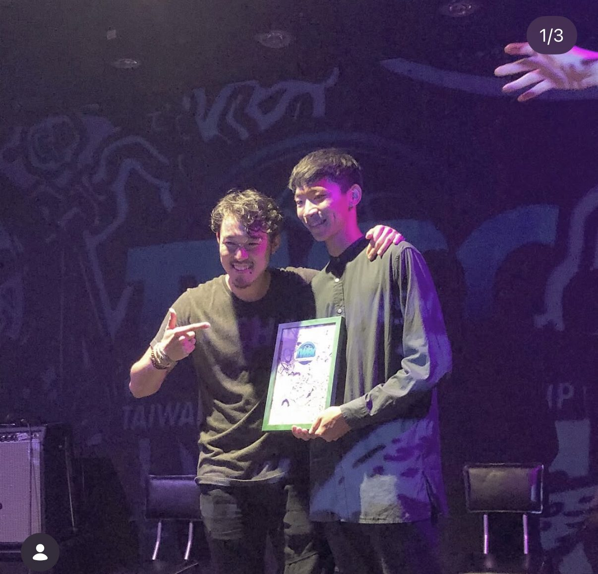
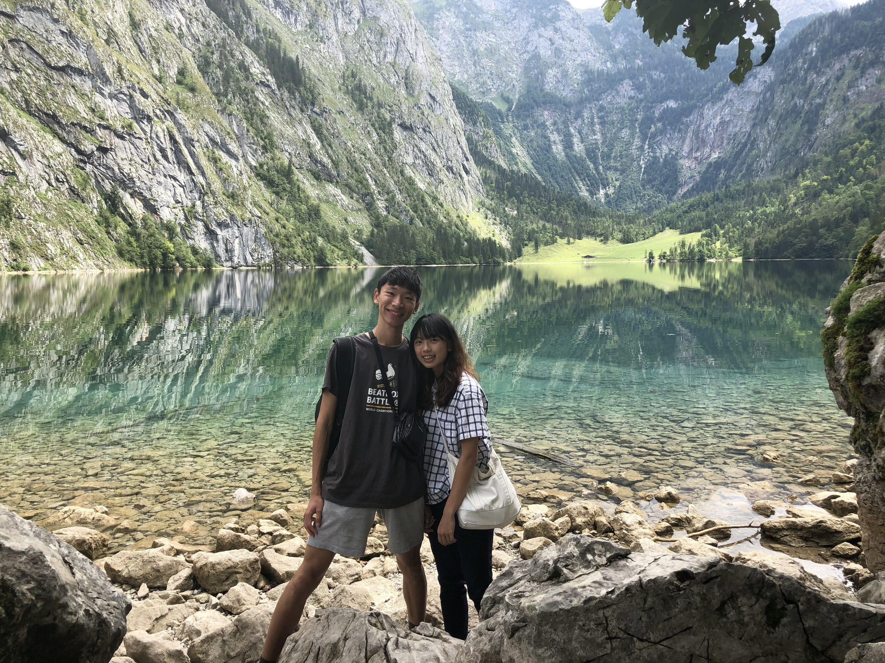
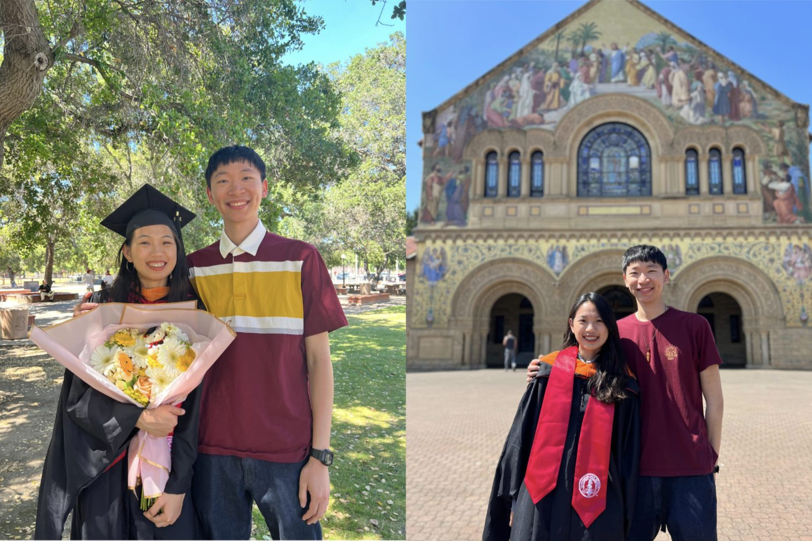
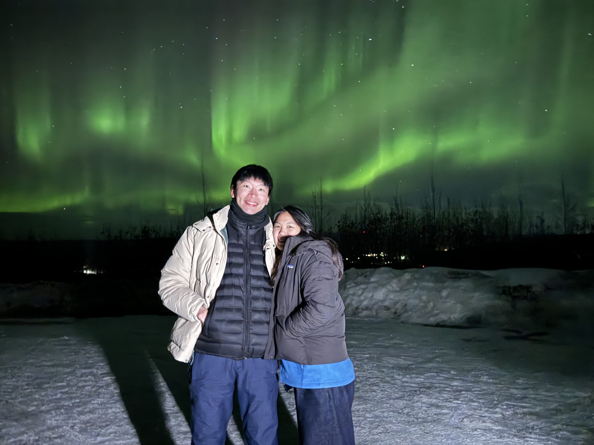

十年，一點一點走到這裡
2016 年夏天，一場宿營的舞會，一個意外的配對。
從台大椰林大道到舊金山，從同班同學到一起走進婚禮——
十年，每一段都有故事。
舞會亂排，剛好是你
宿營第三小隊是相遇的起點。同小隊的通常不會被分到同一對舞伴，但男生那邊排隊大亂，最後隨機湊對——她和他，意外被分在一組。
她是觀察很細的人。從布幕縫隙看到腳，靠鞋子就認出了他。
暗自有點開心。
他高高瘦瘦靦腆，Beatbox 亞洲賽台灣代表，大家都在關注他，也被大家叫上去表演；她開朗大方，讓他印象深刻



同一班，同一台腳踏車
後來同班，一起上課、去圖書館、騎同一台腳踏車穿過椰林大道。一起在學習開放空間讀書、做專題、比賽得獎、拿書卷獎，在學校一起長大。
起初他載她，大四他膝蓋不好，換她載他。
有個阿伯路過，對她說「阿呦，神力女超人喔」
從來沒商量過，都選了 7
兩人熱愛打籃球，都參加系隊。從來沒有討論背號，各自幸運數字都是 7，也不約而同穿上同款的台大機械 7 號球衣。
大三各自當上機械系男籃、女籃隊長。
7 號張維哲，7 號張芝綾，是彼此的聊天室暱稱




他拿了冠軍，她一起去德國
大二，維哲拿下台灣 beatbox 冠軍，前往德國參加世界賽。
她一起去了，和各國冠軍一起，在很年輕的時候有了一段很難忘的回憶。
比得台灣冠軍更厲害的是，她總是在吵雜的節奏中生存
一起準備，一起飛過去
兩個人的夢想是去美國看看世界。一起備考、準備申請資料，最後幸運地都錄取了灣區距離一小時的學校。灣區公共交通很不方便，平均單程2.5小時
她說自己成績沒他好，沒想到真的錄取了。她在 Stanford 吸收矽谷、設計精華，他在 UC Berkeley 鑽研自駕車研究。
現在他在 Tesla 做自駕車，她是 Apple iPhone 工程師

